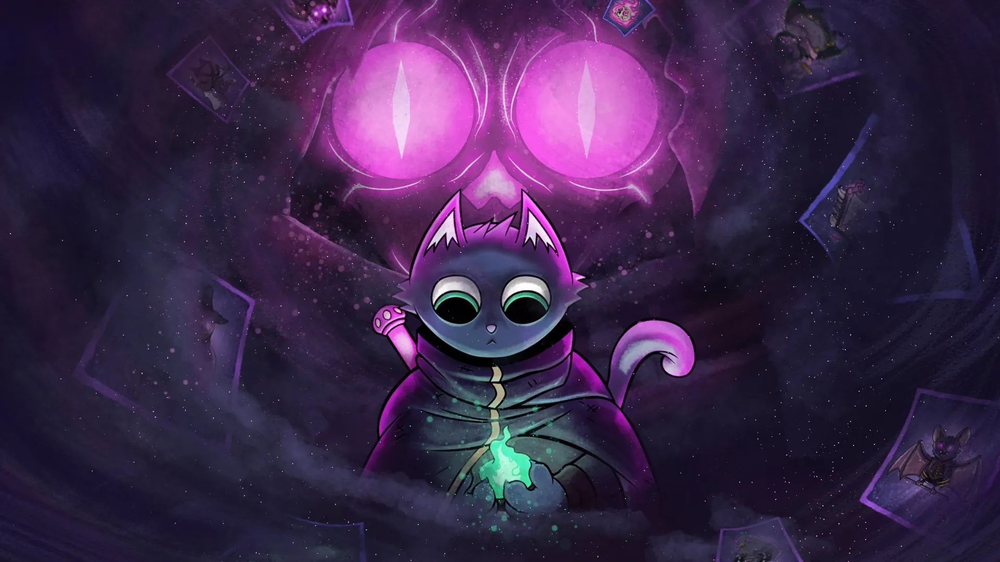
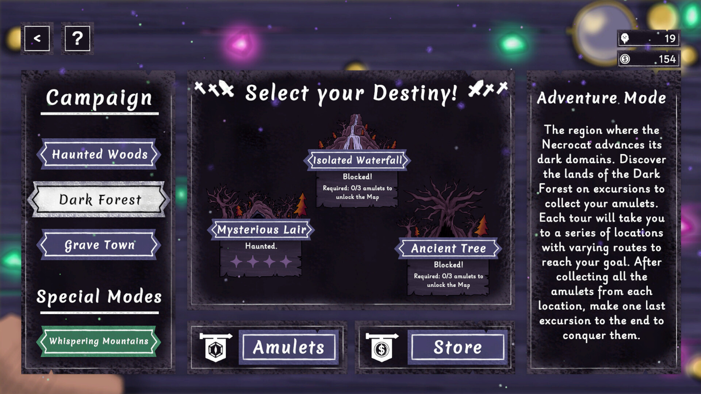
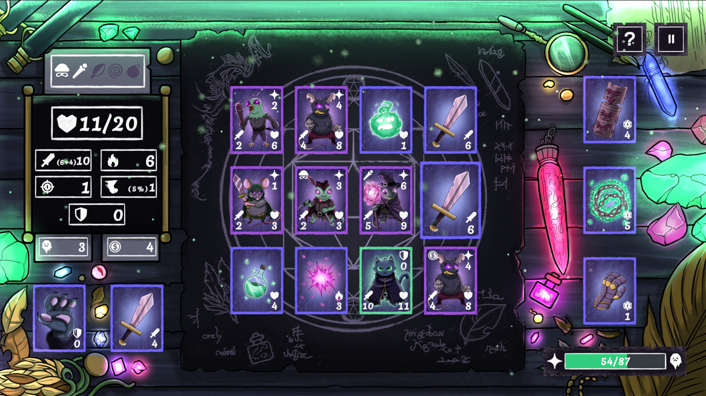

NECROCAT
Um jogo de estratégia baseado em turnos e movimentação por grid de cartas. O jogador navega por um tabuleiro dinâmico onde cada escolha dita a linha tênue entre o ganho de recursos e o fim da partida. O objetivo é gerenciar a própria integridade a cada monstro abatido ou item coletado, desbravando o tabuleiro para confrontar o Necrocat e impedir seus planos rituais que ameaçam o ciclo natural da vida.

Mecânicas do Jogo
O segredo deste sistema está nas escolhas de alto risco e no layout matemático do tabuleiro. Clique nos cards abaixo para expandir os sistemas mecânicos:
Movimentação em Grid
▼
O cenário é composto por uma matriz de cartas. O jogador pode se mover apenas para cartas adjacentes. Escolher o próximo passo exige estratégia, pois uma carta pode conter uma armadilha, um tesouro essencial ou um guardião do Necrocat.
Custo da Ação (Ciclo Vital)
▼
Cada interação cobra seu preço. Derrotar inimigos drena seus recursos ou a sua vida, aproximando o herói da morte de forma matemática. O jogador precisa calcular rotas perfeitas para passar de fase sem zerar seus atributos.
Combate Tático Estático
▼
Os combates acontecem diretamente no grid de cartas por meio de resolução numérica. O jogador interage com a carta do monstro usando as armas equipadas no seu inventário, comparando pontos de ataque, defesa e efeitos colaterais ativos.
Boss Mechanics (Necrocat)
▼
A batalha final introduz mecânicas de perturbação de regras. O Necrocat altera a posição das cartas do grid de forma procedural, revive monstros já derrotados nas cartas vazias e pune jogadores que hesitam nas decisões de turno.
Minhas Funções
Atuei diretamente na arquitetura lógica do gerenciamento de cartas e na codificação do comportamento de jogo baseado em turnos.
💻 PROGRAMAÇÃO (Sistemas e Balanceamento)
▼
Responsável pelo desenvolvimento de sistemas, como o gerenciador de fases (Scene/Level Manager), que dita a transição entre o menu, as salas de cartas e o confronto final. Atuei diretamente no refinamento do balanceamento do jogo, utilizando dados coletados em testes práticos (playtests) para calibrar o custo de vida e o ganho de recursos no grid.


Acesse o Projeto
Enfrasque sua coragem e jogue a versão de testes na Steam ou dê uma olhada profunda no conceito estético e balanceamento de cartas através do GDD.
Jogar na Steam ↗ Ler o GDD do Jogo 📄Gameplay em Ação
Assista à demonstração em vídeo destacando as tomadas de decisão na exploração do grid e as habilidades destrutivas do Necrocat no final do andar.